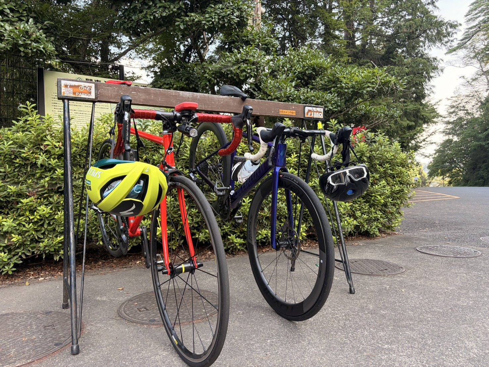
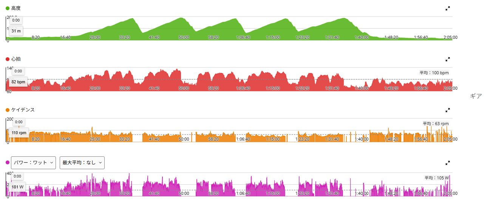
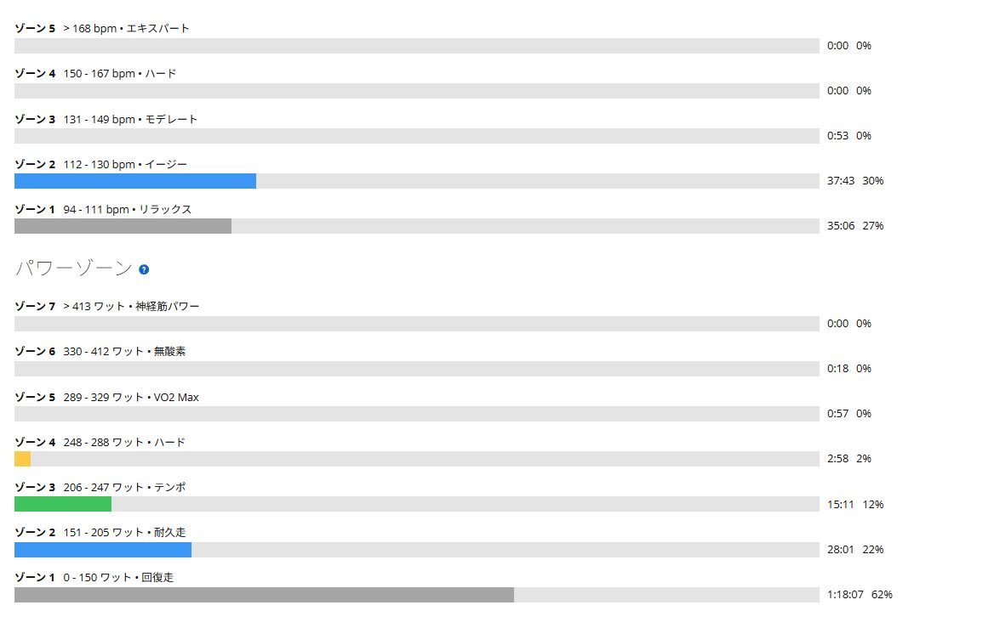

白石の翌日は、友人と会話しながら唐沢5本。
前日は白石峠、定峰、裏白石まで走り、TSSは205.9。翌日は友人と2人で唐沢へ行き、会話できるペースで5本登ってきた。
5本と聞くと回復走には見えない。それでも平均心拍は100bpmで、心拍ゾーン4と5はゼロ。登った本数より、どの強度で走ったかがよく表れた一日だった。

白石ライド翌日のアクティブレスト
前日は白石峠。さすがに翌日は、さらに高強度を重ねる日ではない。
ただ、完全に何もしないのではなく、軽く動かして脚の血流を増やしたい。そこで友人と唐沢へ向かい、息を切らさず話せる強度を上限にした。本人の感覚はアクティブレスト。記事上では、アクティブレスト寄りの低強度ベース走と整理する。
32.89km・獲得665mでも平均心拍100bpm
走行距離は32.89km、走行時間は2時間05分32秒、獲得標高は665m。平均105W、NP158W、IF0.574、TSS68.7だった。平均心拍は100bpm、最大135bpm、平均ケイデンスは63rpm。
2時間を超えて坂も5本あるため、外形だけなら軽いライドには見えにくい。それでも平均心拍100bpmという数字が、この日の余裕を端的に示している。有酸素トレーニング効果は2.6で主な利点はベース、無酸素は0.0だった。
友人と会話しながら唐沢を5本
この日の目的はタイムでもパワーでもない。登りに入っても息を切らして無言にならず、友人と話せる強度で脚を動かすことだった。話しながら登り、下って、また登る。それを5本繰り返した。
ひとりで低強度を2時間続けると、負荷より退屈のほうが強敵になることがある。以前、メニューなしで4本ローラーを40分回した日はかなり長く感じた。今回は友人との会話があったので、2時間を超えても時間の進み方がまるで違った。
5回登っても心拍は大きく跳ねなかった
高度グラフには唐沢の登りが5回きれいに並んでいる。登りではパワーが上がるが、心拍は全体を通して低いまま。平均100bpmに収まり、会話できる余裕も崩れなかった。
前日の疲労を抱えたまま無理に押し切ったのではなく、強度を抑えながら脚を止めずに動かせた。白石翌日の身体へ新しい大きな刺激を足すのではなく、回復の方向へ進むという狙いには合っていたと思う。

心拍ゾーン4と5はゼロ
心拍ゾーン2は37分43秒、ゾーン1は35分06秒。ゾーン3はわずか53秒で、ゾーン4と5はゼロだった。唐沢を5本登っていても、心肺へ強い刺激を入れた日ではない。
パワーも150W以下が1時間18分07秒で全体の62％。248W以上は合計4分少々しかない。外の登りなので短い出力上昇はあるが、高いパワーを長く維持したわけではなかった。

TSS68.7は時間と獲得標高で積み上がった
TSS68.7だけを見ると、回復走としては少し高く感じる。ただし今回は2時間以上走り、獲得標高も665mあった。強度が低くても、時間が長ければTSSは積み上がる。
平均105W、NP158W、IF0.574、平均心拍100bpm。これらに会話できた体感を重ねると、白石翌日にもう一度強い練習をした内容ではない。TSSひとつだけで判断すると、この日の役割を取り違えやすい。
完全休養ではないが、高強度の追加でもない
もちろん完全休養ではない。2時間走り、唐沢を5本登ったため、筋肉や腱への負担がゼロではない。平均気温28.0℃、最高33.0℃で、推定発汗量も958mlあった。
それでも前日の白石ライドとは役割が違う。昨日はFTP付近を長く踏み、今日は会話ペースで心拍を上げずに脚を動かした。回復走とベース走の間くらい。アクティブレスト寄りの低強度ベース走という表現がいちばん近い。
前日の疲労を数字と体感の両方で見る
白石翌日なので、脚に重さが出ても不思議ではなかった。それでも心拍が異常に上がることはなく、友人と話しながら5本登れる余裕があった。少なくとも、無理に押し切ったライドではない。
ただし平均心拍が低いから、疲労がゼロとは限らない。深く疲れている時は心拍が上がりにくい場合もある。翌日の脚、睡眠、食欲、安静時心拍を見ながら、白石と唐沢の2日分を吸収できているか確認したい。
今回やってみて思ったこと
前日にTSS200を超えたからといって、翌日は必ず完全休養というわけではない。身体の反応を見ながら低強度で動かす選択肢もある。今回は友人と一緒だったから、会話ペースを守りながら2時間を退屈せずに走れた。
唐沢5本という本数だけなら強そうに見えるが、実際は平均心拍100bpm、IF0.574。数字は内容を表す。ただしTSSのようなひとつの数字だけでは足りない。平均心拍、強度、本人の体感まで合わせて見て、ようやくこの日の狙いが分かる。
自分用メモ
- 全体32.89km / 2時間05分32秒 / 獲得665m
- 強度平均105W / NP158W / IF0.574 / TSS68.7
- 心拍平均100bpm / 最大135bpm / ゾーン4・5は0秒
- ケイデンス平均63rpm
- 環境平均28.0℃ / 最高33.0℃ / 推定発汗958ml
- 位置づけアクティブレスト寄りの低強度ベース走
- 回復確認翌日の脚、睡眠、食欲、安静時心拍を見る